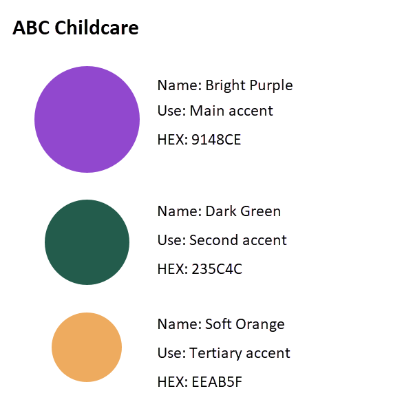
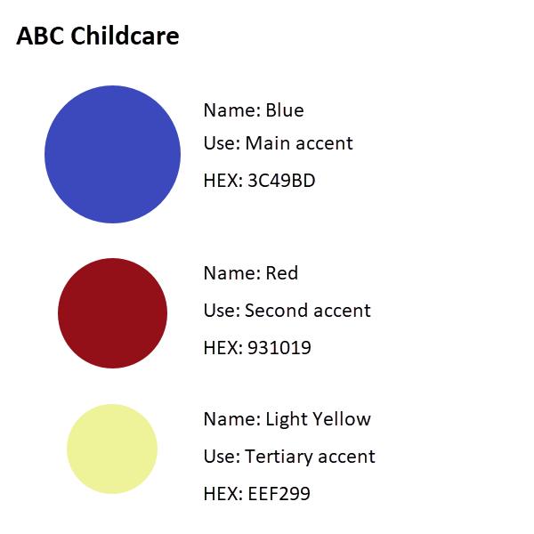
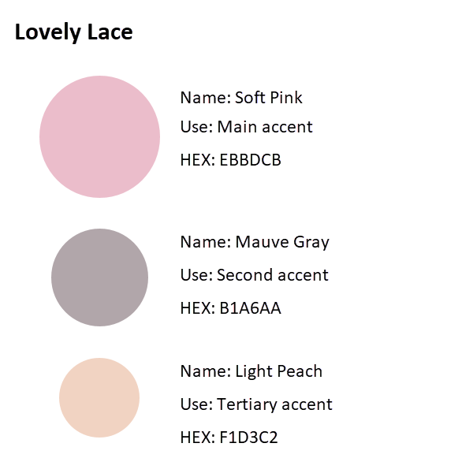
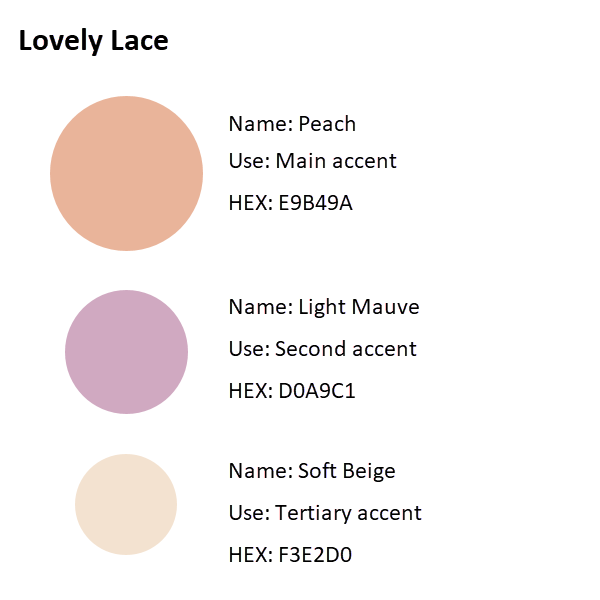

Color Schemes
A color scheme is a defined set of colors that ensures a cohesive look and feel across a project. By maintaining consistency, a well-structured color scheme helps designers create visually appealing and effective designs.
Color Scheme Examples
| Purpose | Color Scheme |
|---|---|
| Create a website and marketing materials promoting ABC's childcare business to gain new clients and retain existing clients. |  |
 |
|
| Create store front decor, public website, and business cards for a new high end ladies clothing store that specializes in vintage clothing. |  |
 |
|